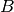
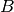
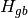

Computation of the dynamical model¶
Unactuated free model¶
- World.update_dynamic()
Compute the forward geometric, kinematic and dynamic models.
Recursively update each body pose, jacobian, djacobian, twist and nleffects attributes (thanks to the arboris.core.Body.update_dynamic() method) and then update the world mass, viscosity and nleffects attributes.
Example:
>>> w = simplearm() >>> w.update_dynamic()
Algorithm:
The (world) generalized mass, viscosity and nleffect matrices respectively denoted
 ,  and
,  and  are computed from each body
are computed from each body
 jacobian , hessian , mass ,
viscosity
jacobian , hessian , mass ,
viscosity  and nleffects
and nleffects  matrices as :
matrices as :![M &= \sum_b \J[b]_{b/g}\tp \; M_b \; \J[b]_{b/g} \\
B &= \sum_b \J[b]_{b/g}\tp \; B_b \; \J[b]_{b/g} \\
N &= \sum_b \J[b]_{b/g}\tp
\left( M_b \; \dJ[b]_{b/g} + N_b \; \J[b]_{b/g}\right)](_images/math/e382306a6b2d88847d77b1ba661e7ebb976bd855.png)
If there is no additional constraint (such as contacts) nor actuation involved, the resulting (free) model is then:

- Body.update_dynamic(pose, jac, djac, twist)
Compute the body pose, jac, djac, twist and its children ones.
This method (1) sets the body dynamical model (pose, jacobian, hessian and twist) to the values given as argument, (2) computes the dynamical model of the children bodies and (3) call the equivalent method on them.
As a result, the dynamical model of all the bodies is computed recursively.
Parameters: - pose (4x4 ndarray) – the body pose relative to the ground: 
- jac (6x(ndof) ndarray) – the body jacobian relative to the world (in body frame):
- djac – the derivative of the body jacobian:
- twist (6 ndarray) – the body twist:
Algorithm:
Let’s define the following notations:
 : the ground body,
: the ground body, : the parent body (which is the present arboris.Body
instance)
: the parent body (which is the present arboris.Body
instance) : a child body,
: a child body, : the joint between the bodies and ,
: the joint between the bodies and , : reference frame of the joint , rigidly fixed to the parent
body
: reference frame of the joint , rigidly fixed to the parent
body : new frame of the joint , rigidly fixed to the child body
: new frame of the joint , rigidly fixed to the child body
One can notice that
 and are constant.
and are constant.The child body pose can be computed as
where
 depends on the joint generalized configuration and is
given by its pose attribute.
depends on the joint generalized configuration and is
given by its pose attribute.The chil body twist is given as
![\twist[c]_{c/g} &= \Ad_{cp} \; \twist[p]_{p/g} + \twist[c]_{c/p} \\
&= \Ad_{cp} \; \twist[p]_{p/g} + \Ad_{cn} \; \twist[n]_{n/r} \\
&= \Ad_{cp} \; \J[p]_{p/g} \; \GVel
+ \Ad_{cn} \; \J[n]_{n/r} \; \GVel_j \\
&= \J[c]_{c/g} \; \GVel](_images/math/ef7b1a4a44add963d301fd6d1def2a734269eb80.png)
where is given by the joint twist attribute. is the generalized velocity of the joint
and is
related to the world generalized velocity by trivial projection
therefore, the child body jacobian is
![\J[c]_{c/g} &= \Ad_{cp} \; \J[p]_{p/g} +
\begin{bmatrix}
0 & \cdots & 0 & \Ad_{cn} \; \J[n]_{n/r} & 0 & \cdots & 0
\end{bmatrix} \\](_images/math/016c119af2f2bd605fec3c24c0a729eecbe15617.png)
where
![\J[n]_{n/r}](_images/math/91e89d6e0bb58d1b696269e4b21a1694848f42da.png) is given by the joint
jacobian attribute. Derivating the previous
expression leads to the child body acceleration:
is given by the joint
jacobian attribute. Derivating the previous
expression leads to the child body acceleration:the expression of the child body hessian is then obtained by identification:
with
and where and are respectively given by the joint idadjoint and djacobian attributes.
T_ab: velocity of {a} relative to {b} expressed in {a} (body twist)
{kind=link}
Controllers model¶
- World.update_controllers(dt)
Parameters: dt (float) – integration time Example:
>>> w = simplearm() >>> from arboris.controllers import ProportionalDerivativeController >>> joints = w.getjoints() >>> a0 = ProportionalDerivativeController(joints[1:2], 2.) >>> w.register(a0) >>> w.init() >>> w.update_dynamic() >>> w.update_controllers(0.001) >>> w._impedance array([[ 686.98833333, 223.44666667, 20.67333333], [ 223.44666667, 93.44866667, 10.67333333], [ 20.67333333, 10.67333333, 2.67333333]]) >>> w._admittance array([[ 0.00732382, -0.0203006 , 0.0244142 ], [-0.0203006 , 0.07594182, -0.14621124], [ 0.0244142 , -0.14621124, 0.76901683]])
Algorithm:
Let’s consider the following discretized 2nd-order model:
considering

we get

Here
 sums up the generalized forces due to
all the active controllers and constraints.
sums up the generalized forces due to
all the active controllers and constraints.The generalized force due to a controller has the following form:
where
 is constant during the
is constant during the
![[t, t+dt]](_images/math/73e7e47b5c0e107c5442018660601bf17ebb8d72.png) period of time.
period of time.It leads us to

One can the define impedance (
 ) and admittance (
) and admittance ( )
matrices:
)
matrices:TODO: check the two last tests results!